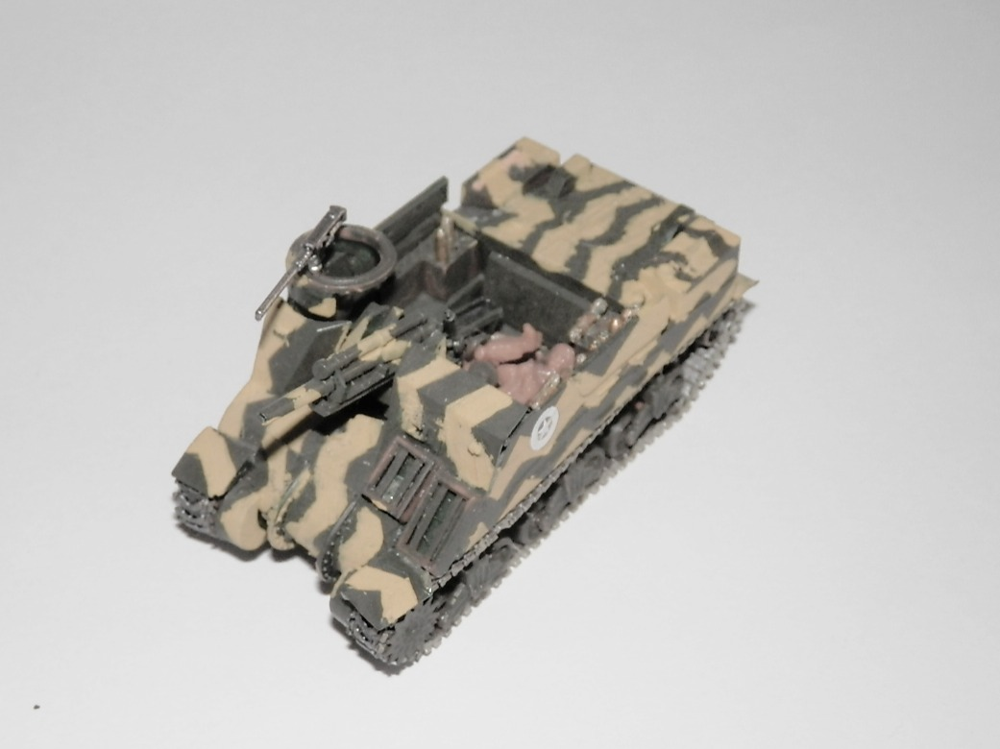
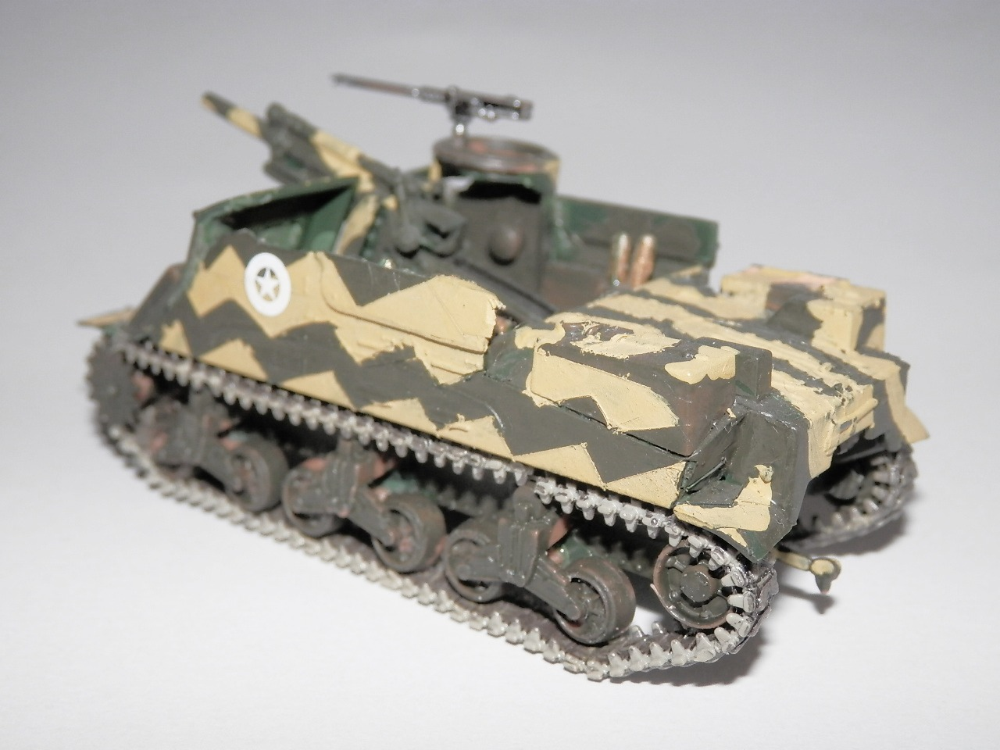
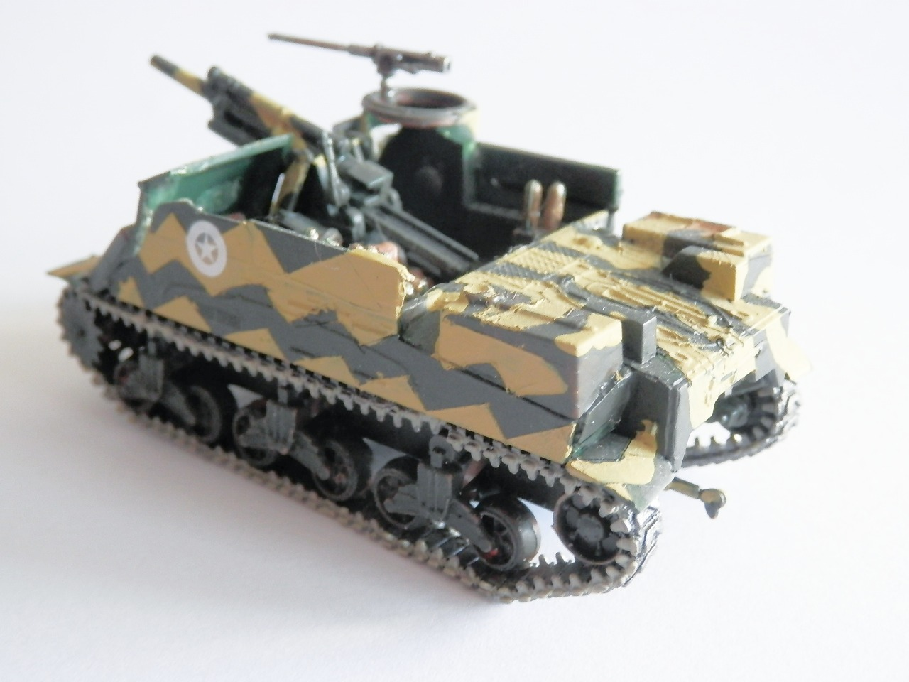
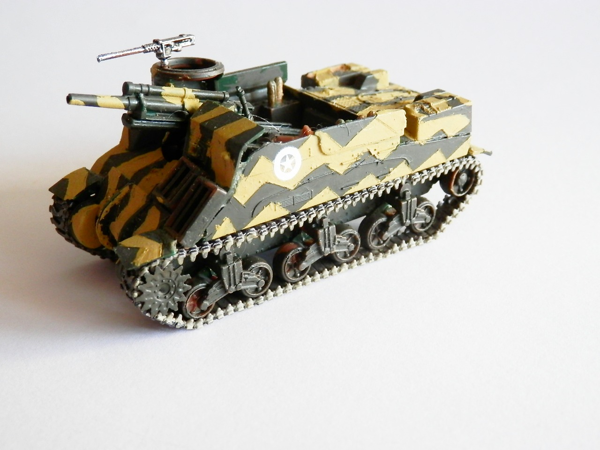

Mezzi militari · scale model archive
M7 Gun Motor Carriage 105mm 'Priest'
M7 Gun Motor Carriage 105mm 'Priest' — Kit: Revell, Scale: 1772. Camo inspired by World of Tanks

Photo gallery



English description
Camo inspired by World of Tanks
Descrizione italiana
Mimetica ispirata a World of Tanks.